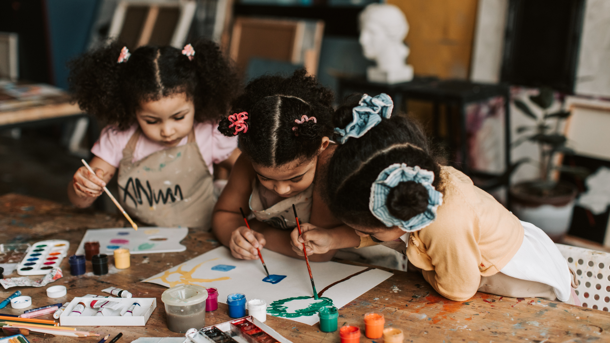

Hello, pessoinha! Espero que esteja bem! Vamos começar nossa revisão para o simulado do segundo semestre!
Poética
Poética é aquilo que produz inspiração, que tem poesia. Presente nas manifestações artísticas verbais e não verbais (corporais, visuais, sonoras etc.), é a capacidade de fazer, criar, fabricar ou inventar algo que nos instiga a sensibilidade.
A construção...
A palavra construção significa compleição, composição, constituição, criação, elaboração, formação, estruturação… como aplicamos o conceito de construção na arte?
Desconstrução e reconstrução...

A palavra “revolução” é muito importante para os artistas, em diversos momentos na história da arte, uma vez que movimentos artísticos são marcados, muitas vezes, por _____________ e ____________ de conceitos e visões de mundo.
A desconstrução!
Muito vem se falando sobre desconstrução em vários segmentos da arte e da cultura. Esse é um conceito desenvolvido pelo filósofo Jacques Derrida (Argélia, 1930 - 2004). Para ele, desconstrução refere-se à consciência de que uma ideia nunca é _________ e, em virtude disso, é sempre aberta a novas ______________.
A criatividade!
São muitos os modos de reconstruir algo, quer seja por ideias, técnicas, ou mesmo por olhar para obras de arte do passado e, tomando-as como inspiração ou referência, reconstruí-las. A palavra “criatividade” foi fundamental para a arte realizada entre o final do século XIX e a primeira metade do século XX. quando se entendia que os artistas deveriam ser especialmente criativos e inovadores. Isso se tornou sinônimo de:
Opa, não foi dessa vez! Vamos tentar de novo?
Parabéns! Você mandou muito bem!
Quer jogar mais uma vez?
Arrasou! Até a próxima!